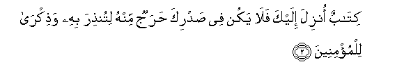
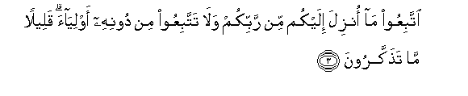
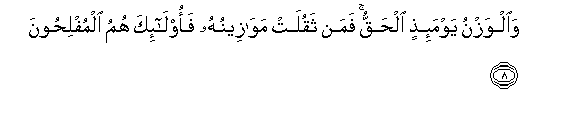
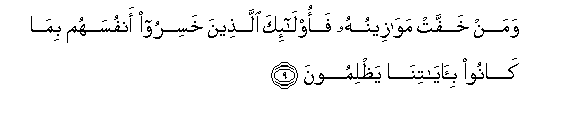
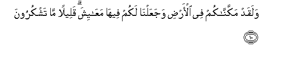

Sacred Texts Islam Index
Hypertext Qur'an Unicode Palmer Pickthall Yusuf Ali English Rodwell
Sūra VII.: A’rāf, or the Heights Index
Previous Next

The Holy Quran, tr. by Yusuf Ali, [1934], at sacred-texts.com
Sūra VII.: A’rāf, or the Heights
Section 1
1. Alif, Lām, Mīm, Ṣād.

2. Kitabun onzila ilayka fala yakun fee sadrika harajun minhu litunthira bihi wathikra lilmu/mineena
2. A Book revealed unto thee,—
So let thy heart be oppressed'
No more by any difficulty
On that account,
That with it thou mightest
Warn (the erring) and teach
The Believers.

3. IttabiAAoo ma onzila ilaykum min rabbikum wala tattabiAAoo min doonihi awliyaa qaleelan ma tathakkaroona
3. Follow (O men!) the revelation
Given unto you from your Lord,
And follow not, as friends
Or protectors, other than Him.
Little it is ye remember
Of admonition.
4. Wakam min qaryatin ahlaknaha fajaaha ba/suna bayatan aw hum qa-iloona
4. How many towns have We
Destroyed (for their sins)?
Our punishment took them
On a sudden by night
Or while they slept
For their afternoon rest.
5. Fama kana daAAwahum ith jaahum ba/suna illa an qaloo inna kunna thalimeena
5. When (thus) Our punishment
Took them, no cry
Did they utter but this:
"Indeed we did wrong."
6. Falanas-alanna allatheena orsila ilayhim walanas-alanna almursaleena
6. When shall we question
Those to whom Our Message
Was sent and those by whom
We sent it.
7. Falanaqussanna AAalayhim biAAilmin wama kunna gha-ibeena
7. And verily We shall recount
Their whole story
With knowledge, for We
Were never absent
(At any time or place).

8. Waalwaznu yawma-ithini alhaqqu faman thaqulat mawazeenuhu faola-ika humu almuflihoona
8. The balance that day
Will be true (to a nicety):
Those whose scale (of good)
Will be heavy, will prosper:

9. Waman khaffat mawazeenuhu faola-ika allatheena khasiroo anfusahum bima kanoo bi-ayatina yathlimoona
9. Those whose scale will be light,
Will find their souls
In perdition, for that they
Wrongfully treated Our Signs.

10. Walaqad makkannakum fee al-ardi wajaAAalna lakum feeha maAAayisha qaleelan ma tashkuroona
10. It is We Who have
Placed you with authority
On earth, and provided
You therein with means
For the fulfilment of your life:
Small are the thanks
That ye give!